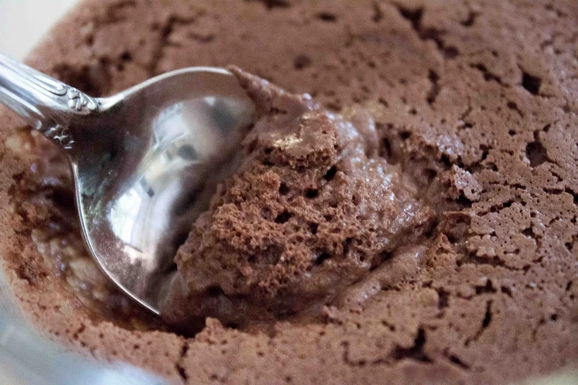
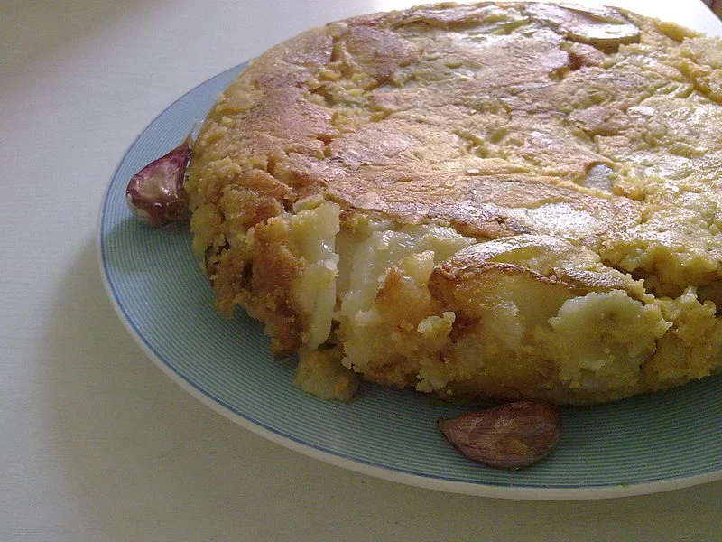

LA FUNCIÓN DE LOS HUEVOS EN LA COCINA 🍳
Aglutinador, levantador, humidificador, espesante: el sustituto depende del rol de los huevos en la receta.
- Levantador: los pasteles o bollos con textura porosa. Si la receta pide m\u00e1s de un huevo o clara de huevo al punto de nieve, la función del huevo es hacer subir la masa.
- Humidificador / aglutinador: magdalenas, galletas, pasteles, bollos y recetas que contienen un solo huevo.
- Espesante: al cocerlos, los huevos espesan flanes, quiches, cremas...
A menudo, cuando la receta sólo necesita un solo huevo, no es esencial, sobre todo si la receta ya lleva gluten (trigo, centeno, espelta, kamut...) u otro ingrediente que haga de aglutinante (yogur de soja, tofu, compota...). En estos casos podemos eliminar el huevo sin que ello afecte a la receta. En general, los huevos aportan porosidad/espumosidad y estructura a las pastas.
PARA TENER EN LOS ARMARIOS! 🧺
- Fécula de patata o de maíz (tipo maicena)
- Tetrabrik de nata vegetal: soja, arroz, avena, almendra...
pruébalas para saber cuál prefieres! La nata de soja es la más versátil y la más fácil de encontrar - Bolsas de levadura química
QUÉ ES EL AQUAFABA?
Detrás de esta palabra un poco extraña se esconde el zumo de garbanzos, que va perfecto para las recetas que piden clara de huevo al punto de nieve. El aquafaba también permite hacer una mousse perfecta para hacer merengues. Hay que probarlo!
- Escurrir un bote de garbanzos.
- Recuperar el líquido.
- Con una batidora eléctrica potente, batir hasta hacerlo subir al punto de nieve y añadir azúcar en polvo, como harías al batir una clara de huevo (batiendo un poquito más de tiempo). Obtendrás una mousse firme y con un sabor neutro, que se puede cocer a fuego lento y durante algo más de tiempo.
USOS ESPECÍFICOS 🎯
Reencuentra el gusto de los huevos duros!
El gusto y el olor de la sal de Kala Namak son muy similares a los de los huevos duros gracias al azufre que contiene. Al igual que la sal marina, este condimento está compuesto principalmente de cloruro de sodio. Puedes poner sobre los aguacates, el tofu, las ensaladas, etc., pero ten cuidado: el gusto es muy intenso, no te pases con la cantidad! La sal de Kala Namak, también llamada sal negra o sal del Himalaya, proviene principalmente del Himalaya nepalí. Podemos encontrar en algunos herbolarios o tiendas especializadas o por Internet.
Dar color a un pastel, un brioche o una coca
La leche vegetal azucarada, la nata vegetal o el jarabe de agave, de arce o de dátil diluidos en un poco de agua son perfectos para dar color a pasteles, bollos y tortas.
Tortillas sin romper ningún huevo
Gracias al tofu sedoso o firme y la harina de garbanzo, continúa disfrutando de tortillas y de huevos estrellados!
www.infovegana.com/tortilla-de-patatas-vegana El sustituto de huevo
Se trata de un preparado que podemos encontrar en algunas tiendas especializadas.
El sustituto de huevo es fácil de usar: basta con sustituir un huevo por una dosis de sustituto y un poco de agua. Sin embargo, no es indispensable ni mucho menos, ya que las otras posibilidades descritas en este tríptico pueden sustituir los huevos de la misma manera.
REENCONTRAR EL ASPECTO DE LA CLARA DE HUEVO 
Mezcladas con agua, las semillas de lino molidas y las semillas de chía dan una sustancia pegajosa muy parecida a la textura de la clara de huevo. Es preferible moler las semillas de lino a medida que las necesitamos dado que, una vez molidas, se oxidan rápidamente. Cuenta dos cucharaditas de semillas de lino molidas o dos cucharaditas de semillas de chía + 30ml de líquido. Las semillas de chía deben reposar 10 minutos después de mezclarlas, enteras, con el agua.
ZUMO DE LIMÓN, VINAGRE Y BICARBONATO PARA HACER SUBIR LA MASA 🍹
Estos ingredientes sustituyen la clara de huevo batida al punto de nieve. Aportan esponjosidad y contribuyen a hacer subir la pasta como complemento de la levadura, por ejemplo para tortas, magdalenas y cupcakes.
Como la reacción se produce después de añadirlos a la pasta, hay que añadirlos en el último momento, mezclar la pasta y ponerla en el horno enseguida.
Cuenta una cucharadita de bicarbonato de sodio + una cucharadita de vinagre de sidra o de zumo de limón. Es preferible usar zumo de limón para las recetas dulces.
HARINAS PARA ESPESAR 🌾
Para espesar quiches y tartas, normalmente basta sustituyendo 1/4 de la harina habitual de la receta por harina de garbanzo, de altramuz o de soja, o harinas pre-cocinadas llamadas /natas/ (arroz, mijo, kokkoh...). Las harinas de garbanzo, de altramuz y de soja aportan un ligero color dorado a las recetas. Gracias a estas harinas, también puedes modificar tus pastas para hacer crepes!
EL AGAR-AGAR, UN POTENTE GELIFICANTE 🍮
El agar-agar es un alga incolora, sin sabor ni olor, que sirve para dar una textura gelatinosa. La puedes usar en cualquier receta que quieras solidificar: pasteles, flanes, panna-cotta... Hay que hacer hervir el agar-agar para activar su efecto gelificante, que hará efecto cuando la preparación se habrá enfriado. Elige la versión en polvo, que es mucho más práctica. Cuando recalentamos un plato hecho con agar-agar, éste no pierde la consistencia. 2 gramos de agar-agar en polvo (aproximadamente una cucharadita plana) son suficientes para 500ml de líquido.
*Basado en contenido original de L214